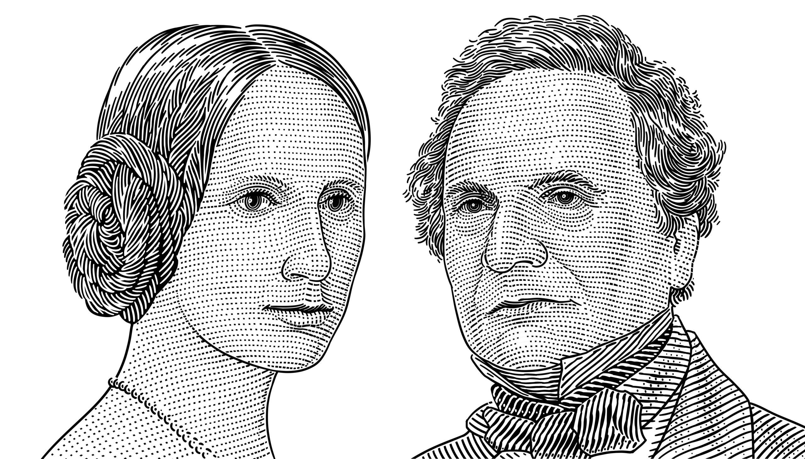

A una edad temprana, el talento matemático de Lovelace la condujo a una relación de amistad prolongada con el matemático inglés Charles Babbage, y concretamente con la obra de Babbage sobre la máquina analítica. Entre 1842 y 1843, tradujo un artículo del ingeniero militar italiano Luigi Menabrea sobre la máquina, que complementó con un amplio conjunto de notas propias, denominado simplemente Notas. Estas notas contienen lo que se considera como el primer programa de ordenador, esto es, un algoritmo codificado para que una máquina lo procese. Las notas de Lovelace son importantes en la historia de la computación.
Otros historiadores rechazan esta perspectiva y señalan que las notas personales de Babbage de los años 1836/1837 contienen los primeros programas para el motor. También desarrolló una visión de la capacidad de las computadoras para ir más allá del mero cálculo o el cálculo de números, mientras que muchos otros, incluido el propio Babbage, se centraron solo en esas capacidades. Su mentalidad de 'ciencia poética' la llevó a hacer preguntas sobre el motor analítico (como se muestra en sus notas) examinando cómo los individuos y la sociedad se relacionan con la tecnología como una herramienta de colaboración. matemáticos.
Sin el trabajo de Babbage, la primera computadora digital del mundo no hubiese sido concebida cuando sucedió. De igual manera, muchos de los elementos principales que las computadoras modernas usan hoy probablemente no hubiesen sido desarrollados hasta mucho después. Sin Lovelace, la humanidad hubiese tardado mucho más en darse cuenta de que las computadoras podían servir para mucho más que los cálculos matemáticos.